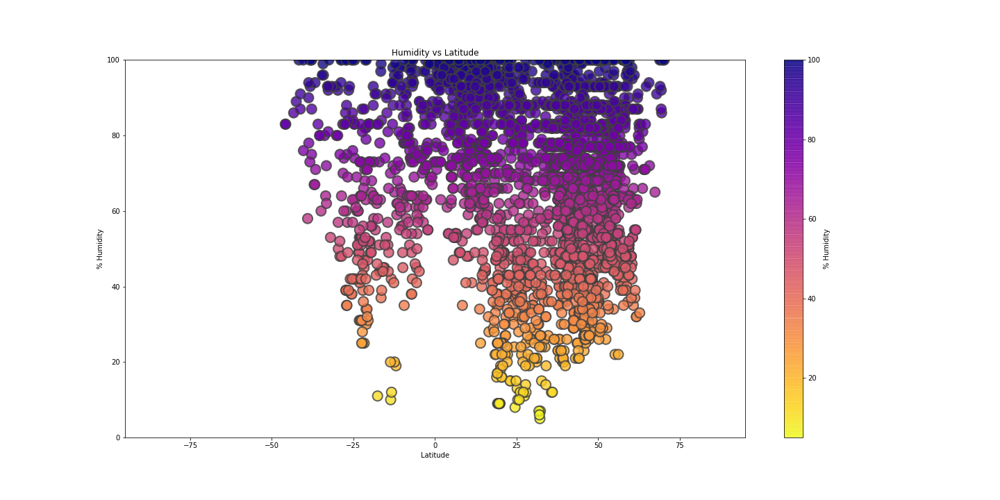
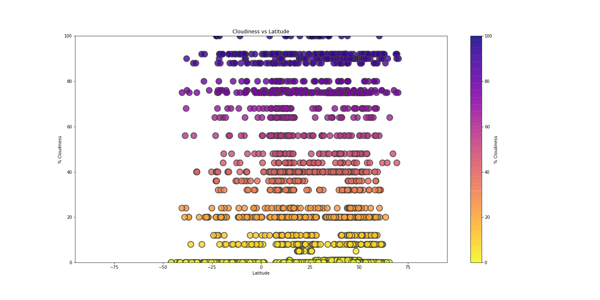

Latitude vs X
The plots below were generated using the data harvested from the OpenWeatherMap API using the Matplotlib and Seaborn Python Libaries
-

Latitude vs Temperature
The data shows that the maximum temperature is higher near the equator. The figure to the left (Max Temperature vs Latitude) shows the concentration of high temperatures are distributed between -30 and 30 latitude. -

Latitude vs Humidity
with a humidity of 70% or higher are concentrated in the northern hemisphere.
This doesnt necessarily mean that the southern hemisphere is less humid. 80.9% of the southern hemisphere surface area is water while the northern hemisphere is 60.7 yielding ~20% less surface area of land to sample cities from. The sample size in this exercise was 4000. The plots show in general that there are more cities in the northern hemisphere.
-

Latitude vs Cloudiness
Whether or not is cloudy doesnt seem to corralate with distance from the equator. The sample set yields fairly even distribution between -50 and 75 latitude. This is a large area spanning from about the middle of Greenland and the southern tip of Argentina. -
Latitude vs Wind Speed
Windspeed also does not appear to correspond with with distance from the equator. The sample set yields fairly even distribution between -50 and 75 latitude.